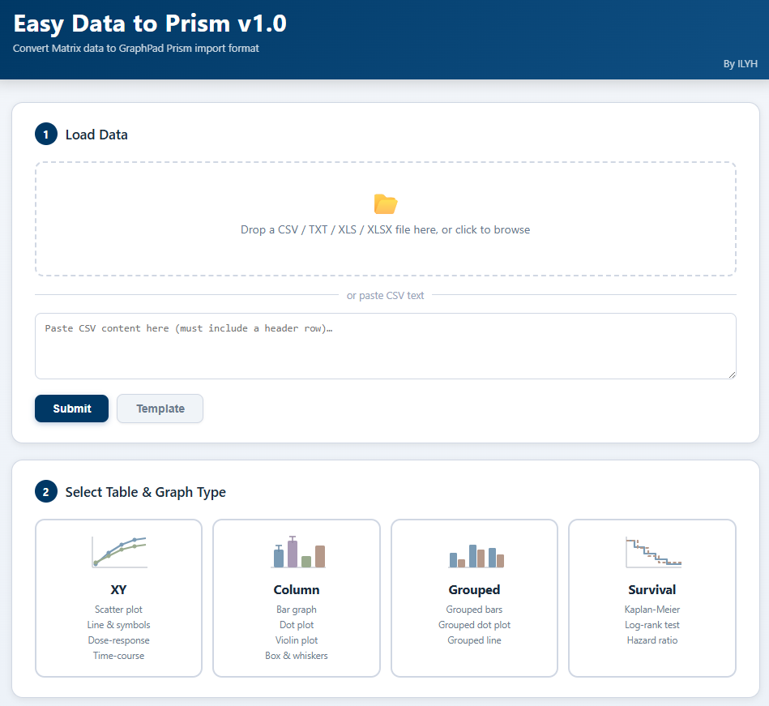
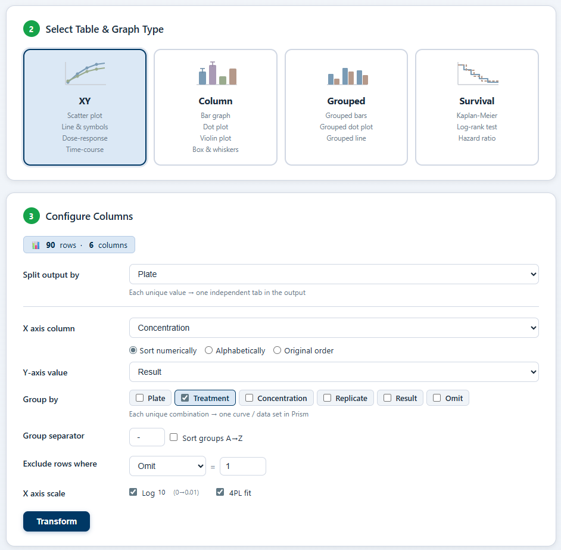
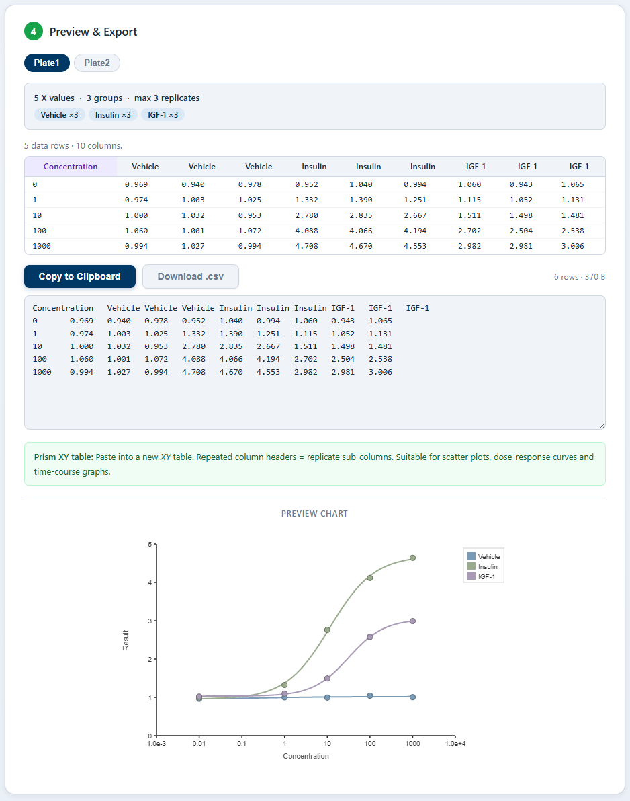

1How it works
Step 1
Drop CSV or Excel
Drag a tabular or matrix data file. Sheets and headers are auto-detected; you can pick which sheet to use.
Step 2
Pick Prism table type
Choose XY, Column, Grouped or Survival. The tool reshapes the data accordingly.
Step 3
Map columns & replicates
Assign group / X / replicate columns; preview shows replicate columns side-by-side as Prism would render them.
Step 4
Live chart & export TSV
Live chart preview using Chart.js; export Prism-formatted TSV that pastes directly into a Prism table.
2Preview
Drop & pick table type
Drag a CSV or Excel file; pick the Prism table type (XY, Column, Grouped or Survival). Sheet and header detection is automatic.

Pick table type & map columns
Choose the Prism table type and assign group, X-axis and replicate columns in one panel. The reshaped output is previewed in Prism layout with replicates rendered as side-by-side columns, exactly as they will appear inside Prism.

Live chart & TSV export
Live Chart.js preview; TSV export pastes directly into the chosen Prism table type so the chart renders identically inside Prism.
